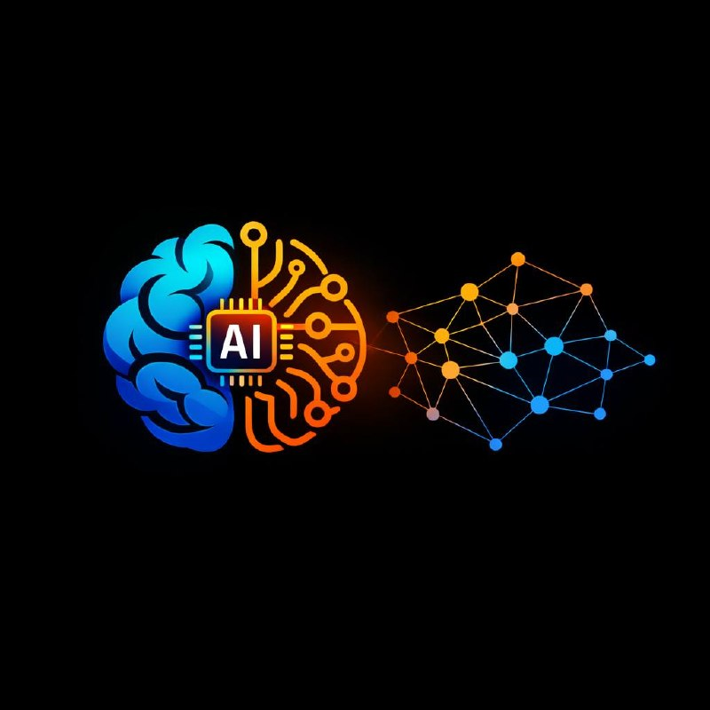

Un recorrido práctico por 50 modelos fundamentales que han dado forma a la inteligencia artificial — de Gauss a GPT. Cada modelo incluye una demo interactiva que puedes “tocar”.
Enlaces: repositorio en GitHub (español) · repositorio original.
Fork no oficial: traducción al español en curso. No está afiliado, patrocinado ni avalado por el autor original ni por ninguna organización. Ver README para detalles.